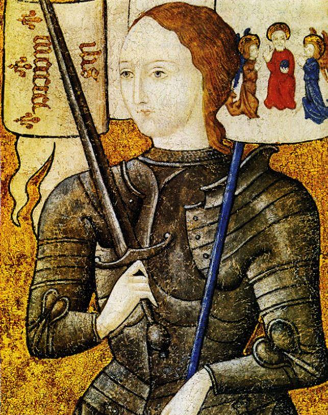

Une principale ligne de force du gaullisme est le constat que la France « vient du fond des âges, qu’elle vit, que les siècles l’appellent et qu’elle demeure elle-même au long du temps ».
Contrairement aux politiciens qui veulent avoir leur vision de la France, De Gaulle cherche donc ce qui la constitue fondamentalement et à en faire application constante.
Si l’on veut réfléchir à la permanence et à l’actualité du gaullisme, il faut étudier d’où est parti le Général dans la conjoncture de son temps, voir les similitudes que peut présenter la situation actuelle - il n’en manque pas - et ce qu’il a fait pour redresser la barre et maintenir le vaisseau à flot. Un premier point essentiel, c’est l’indépendance nationale. Certes, notre pays n’est pas occupé, du moins militairement. La Wehrmacht a été chassée mais nous ne sommes pas indépendants. Ce ne sont plus les Allemands ni les Russes qui prétendent nous conquérir ; c’en est d’autres, soit des pays comme les États Unis d’Amérique qui ont vassalisé l’Europe, l’Union Européenne elle-même qui se constitue en empire et veut soumettre les nations, c’est l’Islam qui veut conquérir la planète le cimeterre à la main.
Mais en plus insidieux, c’est aussi un Soros qui veut nous dissoudre et nous faire entrer dans son fantasme de gouvernement mondial. Et vis à vis de ces velléités, il ne manque pas de munichois ; C’est dire les périls qui nous menacent de tous côtés, auxquels on peut ajouter l’OTAN qui entretient une hostilité dangereuse et hors du temps avec la Russie.
Nous ne sommes pas seuls, heureusement. La France peut s’appuyer sur des planches solides.
La France vient du fond des âges ; elle n’est pas née en 1789, pas plus qu’en 1974. La France, c’est Vercingétorix, Clovis, Bertrand Du Guesclin, Jeanne d’Arc, Bayard, de grands rois qui, au cours du temps ont fait ou défendu la France. On ne peut que se souvenir de Bouvines, d’Orléans, entre autres qui ont été des marqueurs de notre histoire.
Certes, le France n’a pas été épargnée par les divisions :il y a ceux qui ont pris le parti des Romains, ceux qui se sont soumis à la domination de l’Anglais, les guerres de religion par exemple mais il y a surtout ce fil continu cherchant l’unité ; notre unité ne date pas du XIXème siècle.
La France n’existera que si elle reste elle-même ; passé présent et avenir sont indissolubles et l’État qui répond de la France est en charge de son héritage d’hier, de ses intérêts d’aujourd’hui et de ses espoirs de demain… Il est garant de l’unité et la continuité nationales. Périodiquement, il faut un homme - ou une femme - qui conduise le pays au salut.
Quelle situation trouvée par De Gaulle en arrivant au pouvoir ? D’abord en 1945. Au sortir du gouffre, la France reparaissait comme un état indépendant et victorieux, en possession de son territoire et de son empire, recevant avec l’Amérique, l’Angleterre et la Russie la capitulation du Reich, compensant ses dommages, fondant avec les autres grands l’Organisation des Nations Unies, accédant au Conseil de Sécurité avec droit de veto. De Gaulle a rétabli les fonctions régaliennes et restauré l’unité et l’autorité de l’État. À nouveau on a pu parler d’ordre, de liberté, de progrès.
Mais la France revenait de loin : asservissement, prédation financière, déportation, travail obligatoire, privations, persécutions, énormes dégâts matériels, bref elle était dans un état calamiteux rappelant sa situation à la veille de Bouvines ou à l’heure de Jeanne d’Arc. Mais malgré les transports ravagés, les destructions des ports, des ponts, des villes, en 1945, la France reprenait sa marche, tant bien que mal les besoins élémentaires des populations recevaient satisfaction, les absents retrouvaient leur place. L’accroissement des recettes par le rude impôt de solidarité nationale, l’immense succès de l’emprunt de 1945 rapprochaient le pays de l’équilibre budgétaire. Quelques mois après la victoire, l’État était debout, l’unité rétablie, l’espérance ranimée, la France à sa place dans le concert des nations.
Mais pour en arriver là, il fallait l’adhésion massive du peuple, mais pas celle des organisations électorales, économiques, syndicales, rapidement retournées à leurs jeux, leurs prétentions, ambitions et surenchères. Les partis réapparaissaient avec leurs luttes de pouvoir, leurs prétentions discordantes, leurs divisions. Or De Gaulle a le souci de l’unité française, de l’intérêt supérieur du pays, de l’action nationale ; C’est là que lui vient la conviction que les institutions doivent dépendre d’une tête directement mandatée par l’ensemble de la nation, une tête qui ait des objectifs et une stratégie. C’est sans doute là que ressort sa formation militaire. C’est là aussi qu’apparait sa méfiance à l’égard des partis politiques.
Toute ressemblance avec l’époque actuelle n’est évidemment pas fortuite.
Avant de partir, De Gaulle prend soin d’instituer le référendum. Dix-sept présidents du Conseil lui succèderont et vingt-quatre ministères. Un véritable ballet. La France n’avait plus de puissance et l’étranger en obtenait ce qu’il voulait. Les déficits étaient permanents, le franc s’affaiblissait, la faillite menaçait , les infrastructures prenaient du retard. Sur le plan extérieur, l’Europe commençait à réduire l’indépendance et la France glissait sous l’hégémonie des Anglo-Saxons. C’est au même moment que fait surface le projet d’une communauté européenne de défense, revenant à confondre les forces françaises avec les allemandes et les italiennes qui venaient d’être vaincues. L’affaire de Suez nous montrait que la France ne décidait plus de la paix et de la guerre. Dans l’empire, les velléités d’indépendance se multipliaient. Les affaires du Maroc, de Tunisie et particulièrement d’Algérie s’avéraient particulièrement graves. Face à ces évènements, le France ne connaissait que tergiversations, louvoiements.
Si, en 1952, De Gaulle se retire pour écrire ses Mémoires de Guerre, il ne doute pas que les désordres et l’infirmité déboucheront sur une grave crise nationale. Il ne fut donc pas surpris lorsqu’éclata la révolte du 13 mai 1958. Pour un certain nombre de protagonistes, l’idée de faire appel au Général relevait du salut public, face à la déliquescence du régime que nul ne soutenait plus.
Toute comparaison avec la situation actuelle pourrait ne pas être fortuite.
Il fallait donc, pour éviter l’aventure et la guerre civile qu’une autorité nationale, extérieure et supérieure au régime politique du moment rassemblât l’opinion, prît le pouvoir et redressât l’État. De Gaulle se convainquit que cette autorité ne pouvait être que la sienne. Le but à atteindre lui apparait clairement : il lui faut résoudre le problème de la décolonisation, mettre en œuvre la transformation économique et sociale du pays à l’heure de la science et de la technique, rétablir l’indépendance de la politique et de la défense, faire de la France le champion d’une Europe européenne, de lui rendre l’audience et le rayonnement qu’elle connaissait au long des siècles.
Il faut qu’apparaisse un gouvernement capable d’assumer les responsabilités nationales. Quel serait aujourd’hui le processus régulier nécessaire à la mise en place d’un gouvernement républicain capable d’assurer l’unité et l’indépendance de notre pays ? Interdire toute action qui mette en cause l’ordre public ? On pourrait ajouter : qui sape l’essence-même de la France ? Certes, on peut s’attendre à ce que le régime se livre à des soubresauts pour assurer sa survie mais n’est-il pas trop tard ? Tant de ministres et de proches du pouvoir se sont déjà retiré ou se sont trouvé disqualifiés et écartés...
ll en est de même sur le plan diplomatique, que pèse aujourd’hui la France? plus rien, comme en 1958. Certes le sommet français tente bien de prévaloir sur l’Allemagne - et c’est tant mieux- mais comment monter une alliance de revers lorsqu’on se heurte au Groupe de Visegrad, que l’on n’a aucune influence réelle sur le monde latin, que l’on ferme les yeux sur l’agitation islamique dans les Balkans, que l’on ne cesse de battre sa coulpe devant nos anciennes possessions, que l’on est inexistant chez les BRICS, à Shanghai, en Asie Centrale, dans le Caucase ? En Amérique Latine ? Il est question d’abandonner les Iles Eparses. La France n’a jamais été aussi inexistante ni aussi vassalisée. Le tableau est sombre.
Le plan économique et financier n’est pas plus brillant. Comment un pays qui lève tant d’impôts et de taxes peut-il se surendetter ? Où passe cet argent ? Des services publics autrefois réputés, les trains, la Poste, les routes, les ports sont en souffrance quand ils ne sont pas abandonnés à l’étranger ? L’agriculture enregistre les suicides de ses travailleurs, l’industrie est partie ailleurs, le chômage a explosé, l’agro-alimentaire, un de nos fleurons est en recul.
Un gouvernement de salut national n’est-il pas indispensable ? Bien sûr, il y a les partis, la presse, les syndicats peut-être mais les Français sont tellement las, écœurés que tout est possible s’ils veulent imposer leur volonté. Le parallèle avec 1958 est frappant.
Il convient donc de rétablir l’autorité de l’État sur la totalité du territoire, notamment sur les endroits prétendument perdus de la République, remettre en place un plan quinquennal de redressement qui constitue la stratégie pour atteindre les objectifs définis par les instances républicaines. C’est évidemment la mort du libéralisme, encore plus du libéralisme sociétal. Qui s’en plaindra ? Il convient de donner au pouvoir régalien : police, justice, armée les moyens nécessaires et non de les pressurer. Il faut redonner au secteur de la santé toute sa puissance et son efficacité, conserver nos hôpitaux, nos maternités, contrôler les EHPAD : ce sont nos besoins fondamentaux. Il faut donc que la France se renouvelle. Il faut une transformation, pas une révolution. Il faut que le gouvernement soit formé selon les compétences des hommes et femmes retenus, pas selon les copinages politiques ou les manœuvres occultes.
Le pays n’a pas l’impression de vivre dans l’ordre normal. Les Gilets Jaunes ont montré la pauvreté d’une partie de la nation, les besoins criants de certaines familles, la nécessité d’un redressement social ne peut plus être estompée et beaucoup souhaitent l’avènement d’un pouvoir qui remettra le pays sur pied, restaurera l’autorité de l’État, redonnera à la France son prestige et son rayonnement.
Bien entendu, ce régime doit rester républicain et De Gaulle y attachait beaucoup d’importance.
Ainsi en est-il de la démission du gouvernement qu’entraîne une censure de l’Assemblée Nationale. Il faut évidemment s’attendre à ce que les partis tentent de maintenir leurs jeux mais le peuple n’a pas ce genre d’arrière-pensée. Pour le peuple, il s’agit, d’une direction qui, tout en respectant les libertés, puisse avoir la capacité d’action et de responsabilité, parce que la France est en jeu.
La question est celle du Parlement où les manigances politiciennes ne manquent pas de se poursuivre. Il faut donc y avoir une majorité conforme. Alors, l’horizon est ouvert, notamment à l’État, au progrès et à l’indépendance.
Concernant l’Outre-Mer, la conjoncture mondiale poussant à la libération des peuples, il s’agit de donner la liberté à notre empire, tout en gardant des liens d’amitié et ‘estime suffisamment puissants pour que les intérêts matériels et moraux de la France soient sauvegardés. Cette politique est toujours en vigueur. Il est clairement impossible d’assimiler les Musulmans au peuple français. C’est toujours vrai ; on le constate dans nos banlieues.
Si la France veut restaurer sa politique, sa puissance, son influence, sa grandeur et assurer le bonheur de ses habitants, il faut qu’elle en ait les moyens. Ce fut vrai de tous les temps. L’économie est donc l’objet majeur des préoccupations publiques. Force est de constater que notre industrie a connu un déclin, que notre agriculture est bridée, que nos services sont à vau-l’eau, que notre balance extérieure est de plus en plus déficitaire, que la France se surendette, que l’euro nous appauvrit. La prospérité n’est plus au rendez-vous. Bien sûr, la politique économique doit être adaptée à son époque. Or, à cet égard la France ne manque pas de potentiel pour redresser la barre. La nécessité est de coordonner les compétences et les efforts pour déterminer les objectifs, fixer les urgences, établir les priorités, adapter les moyens.
Il est clair qu’il faut un nouveau Pinay aux Finances : c’est la base du redémarrage d’un plan complet de redressement. Comme en 1958, il faudra procéder à une révision déchirante de nos dépenses pour soulager le Trésor, avoir un souci permanent de rigueur. On se souviendra à cet égard de Borloo qui, il n’y a pas si longtemps voulait relancer la politique de la ville au prix de 43 milliards d’euros. Il faudra museler les innombrables budgétivores, publics ou privés. Peut-être faudrait-il concevoir un grand emprunt capable de drainer les assurances-vie et qui rémunère de manière assurée et durable l’épargne des Français. Sans doute faudra-t-il des mesures pour faire revenir l’argent parti, notamment celui des évasions fiscales. Il est clair qu’à cet égard, la France doit se libérer de l’Arabie Saoudite et du Qatar, entre autres. Donc une grande politique de stabilisation nationale.
A cet égard, l’Europe, si elle a un mérite, c’est d’empêcher l’inflation, du moins jusqu’ici. L’épargne s’en trouve favorisée et la masse de l’épargne française est phénoménale. Une prédation serait catastrophique quand il s’agit au contraire de rétablir la confiance. Il faut en outre que la production se tourne vers l’exportation. Ainsi augmente-t-on le niveau de vie.
Tout parallèle avec la situation actuelle pourrait ne pas être fortuit...
Un impératif : il faut sans cesse moderniser mais répartir rationnellement sur l’ensemble du territoire, il faut mobiliser le monde du travail en le faisant participer à la marche des entreprises et à leurs bénéfices. Le progrès passe par le charbon, le pétrole, le gaz, l’atome, les satellites, les transports de toutes sortes, la construction immobilière. Bien entendu, les campagnes veulent profiter de ces rattrapages et il faut réaménager les surfaces, organiser la production et la vente.
Se pose bien évidemment la question de l’Europe. De la fin de l’ère napoléonienne à la guerre de 1940, la France a subi humiliations, défaites, en dehors du premier conflit mondial qui lui a permis, grâce à l’Alsace-Lorraine de reconstituer sa substance mais à un prix gigantesque. Étant sortie dans son unité et son entièreté de la deuxième guerre mondiale, elle peut, à l’avènement du Général De Gaulle être telle qu’elle l’entend et se conduire comme elle veut. L’Allemagne est effondrée et notre pays et entouré de terres amicales. Certes existe et prévaut l’hostilité entre deux mastodontes que sont l’Amérique et l’Union Soviétique, disposant chacun du feu nucléaire qui en fait un protecteur irrésistible. La France a donc un intérêt tout particulier à la paix. Elle est en effet, de par sa géographie spécialement vulnérable. Toutefois, elle n’a aucune ambition territoriale, ne revendique rien. C’est donc sa voix qui peut être entendue, sa main qui peut être saisie par chacun des Grands mais à condition que sa parole et cette main soient libres ; ce d’autant que nombre de peuples du monde regardent vers elle. Elle voit ainsi s’ouvrir un rôle de premier plan, confirmé par l’enthousiasme des peuples, ravis de voir la France se comporter en grande puissance, en nation indépendante.
De Gaulle, définit l’Europe, nonobstant une diversité parmi ses peuples comme un ensemble de même race blanche, de même origine chrétienne, de même manière de vivre, liées entre elles depuis toujours par d’innombrables relations de pensée, d’art, de science, de politique, de commerce. Il est donc logique qu’elles en viennent à former un tout. Déjà, depuis l’empire romain de nombreuses tentatives ont eu lieu pour la rassembler. Pourtant, aucun de ces fédérateurs n’a obtenu des pays soumis qu’ils renoncent à être eux-mêmes. Au contraire, l’arbitraire centralisation a toujours provoqué par choc en retour la virulence des nationalités. L’union de l’Europe ne saurait donc être la fusion des peuples mais elle doit résulter de leur systématique rapprochement. Il faut donc instituer un concert des États européens pour que grandisse en eux une solidarité. De là, si un danger menace pourra naitre une confédération…
Se trouve donc exclue l’éventualité, qui pourrait venir d’une Grande Bretagne, d’une dérive vers l’atlantisme incompatible avec l’Europe européenne. Également tout doit être fait pour écarter de l’Allemagne, le retour de ses mauvais démons pangermaniques. Il faut donc maintenir les frontières que la guerre lui a imposées, rien ne saurait subsister de ses prétentions d’antan sur la Tchécoslovaquie, tout Anschluss doit être exclu, qu’elle doit être privée de la détention et de la fabrication d’armes atomiques. Alors, elle peut être partie à cet ensemble allant d l’Atlantique à l’Oural et au Caucase.
Contrairement à l’Allemagne qui peut espérer trouver sa sécurité sous le parapluie américain, la France peut certes rester dans l’Alliance atlantique mais elle doit s’émanciper de la tutelle de l’OTAN, d’autant qu’elle s’engage dans l’armement atomique. Par-dessus tout, elle veut l’indépendance politique pour sa survie. La France a été pendant des siècles le mastodonte de l’Europe et il s’agit de retrouver sa mission internationale, faute de laquelle elle se disloquerait. C’est ainsi que la France peut attirer et retenir l’Allemagne. Ainsi s’établit la coopération franco-allemande, coopération directe et étroite.
A droite Walter Hallstein président de la CEE de 1958 à 1967L’Europe, c’est à l’origine le Marché Commun mais rapidement, il apparait à De Gaulle que des manœuvres se font jour, qui viseraient à empêcher la France de disposer d’elle-même. Dès le départ, l’institution européenne comporte une ambiguïté : vise-t-elle à la coordination des intérêts des États ou bien à fusionner ceux-ci dans une entité unique qui aurait son gouvernement, entité née dans la cervelle des technocrates. N’ayant pas de goût pour les chimères, le Général choisit la première option. Mais pour les champions de l’intégration, le « gouvernement européen existe déjà : c’est la Commission et ses « experts » réels ou prétendus. Walter Hallstein est le président de la Commission, qui épouse la thèse d’un super- état. Mais Hallstein est surtout un Allemand. On connait aujourd’hui son passé nazi. De Gaulle est en désaccord avec lui, les deux visions étant inconciliables.
C’est l’époque d’une épreuve de force où la France finit par s’imposer, après avoir envisagé la rupture. C’est ainsi que l’agriculture entre dans un Marché Commun que les Anglais s’efforcent de torpiller. L’Italie par contre, pays de très grand passé entend y être reconnue et veut rendre solidaires les peuples de l’ancien monde et un grand courant se créée entre la France et le monde transalpin bien que Rome tienne à ce que soient maintenus des liens avec les Anglo-Saxons. Il apparait que la construction européenne sera une œuvre de longue haleine et elle ne pourra se faire qu’en partant des réalités c’est à dire des États. Toutefois, les propositions françaises se heurtent notamment à la Belgique qui veut que l’Angleterre soit associée au projet.
Le monde est alors face à la menace soviétique mais l’équilibre des forces destructrices de l’Amérique et de l’URSS montre qu’ils ne peuvent s’affronter directement mais par contre, rien ne les empêcherait de se combattre au travers de l’Europe. Dès lors, le parapluie américain ne joue plus, au contraire. Il est clair qu’une hostilité à l’URSS ne peut que pousser Moscou vers l’Asie. C’est là qu’il apparait clairement que la France a un rôle important à jouer mais il faut alors qu’elle en ait la puissance et si elle ne l’a pas, qu’elle se la donne. Sur le plan stratégique, la France n’a plus d’intérêt à rester dans l’OTAN. Elle s’affirme au plan international où sa diplomatie s’exprime. Elle existe à nouveau dans le monde.
Derrière le fait communiste se tient la Russie. Or l’intérêt russe, c’est la paix et c’est alors que la France expérimente une bombe atomique, issue de sa propre technologie. Cette nouvelle situation parait convenir à l’Angleterre et Mac Millan exploite ses liens d’amitié avec le Général.
Charles De Gaulle et Harold Macmillan (Novembre 1961)
Paris poursuivra donc dans le sens de la détente et Khrouchtchev fait une visite en France au cours de laquelle De Gaulle prône la détente et la coopération, ce qui rencontre un écho favorable chez le responsable soviétique qui vante le potentiel économique de son pays.
Une première pierre est posée et De Gaulle va en porter le message à ses alliés, notamment aux Anglais qui le reçoivent avec faste. L’Angleterre, c’est la stabilité des institutions, c’est le respect de la démocratie , avec laquelle on peut construire la paix dans la sagesse et la fermeté.
Ensuite, se rendant au Canada, il y trouve confirmation de l’impasse que constitue une fédération de communautés différentes et y voit aussi le souci de se démarquer des Américains.
Aux États-Unis, les contacts sont bons avec la population et comme toujours avec le président Eisenhower, esprit lucide et pacifique, comprenant qu’il appartient à l’Europe de régler ses propres problèmes, que la France doit y avoir l’initiative. Puis devant le Congrès, la politique française est exposée : instaurer la détente internationale, réduire les oppositions entre les régimes, organiser par coopération de l’Est et de l’Ouest l’aide aux pays qui en ont besoin, réaliser le désarmement.
Le président argentin Arturo Illia reçoit Charles de Gaulle, le 4 octobre 1964L’avènement de Kennedy changera la donne : il sera affronté à la position indépendante de la France qui lui montre combien les politiques divergent, notamment en Asie du Sud-Est. La France s’affirme d’ailleurs dans tout ce qui est non-aligné : Afrique, Iran, Indochine, Moyen-Orient, Amérique Latine et même l’Espagne et l’Autriche, enfin le Québec.
Pour finir, il faut réfléchir à la situation du Général de Gaulle qui ne relève d’aucune hérédité comme les rois, ni d’une autorité à vi, conférée par un referendum, comme les empereurs.
De Gaulle répond, lui à l’appel de la France. Il est son recours, il assure l’intérêt national, l’indépendance de la France. Il a les moyens d’en appeler directement à la nation. Son rôle consiste à tracer les orientations, fixer des buts, donner des directives. On sent là le militaire formé à la stratégie. Le souci permanent est la souveraineté dans l’unité nationale, de l’intégrité du territoire. Le Président veille à s’entourer de gens compétents et de poids. Le souci est la durée et la continuité, le contact avec les départements et leurs populations.
En conclusion, le constat fait par De Gaulle des nécessités de la France et celui que l’on peut faire aujourd’hui apparaissent proches. Au plan intérieur, l’autorité de l’État sur la totalité du territoire est impérative, la maîtrise des budgets s’impose, l’action sociale est indispensable, la politique doit prédominer sur l’oligarchie et les intérêts particuliers. Au plan extérieur, la France doit s’imposer en Europe, se dégager de l’OTAN, entretenir des rapports amicaux avec les États Unis mais dans l’indépendance, travailler à la détente avec Moscou, répondre aux aspirations du Tiers Monde, prendre toute sa part au développement technologique. Le champ est vaste...
Partager cette page